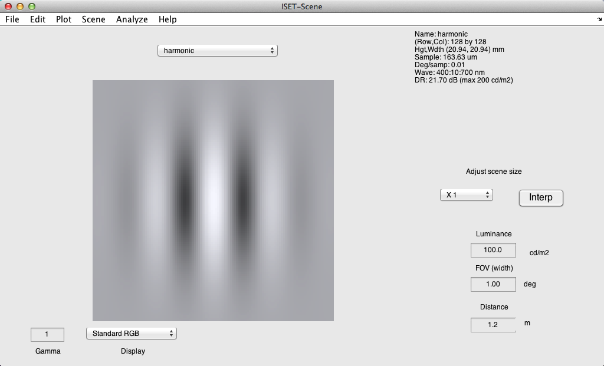
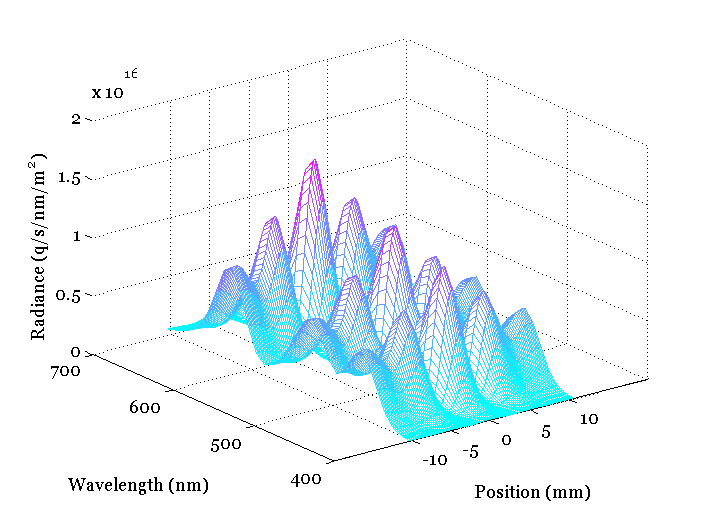
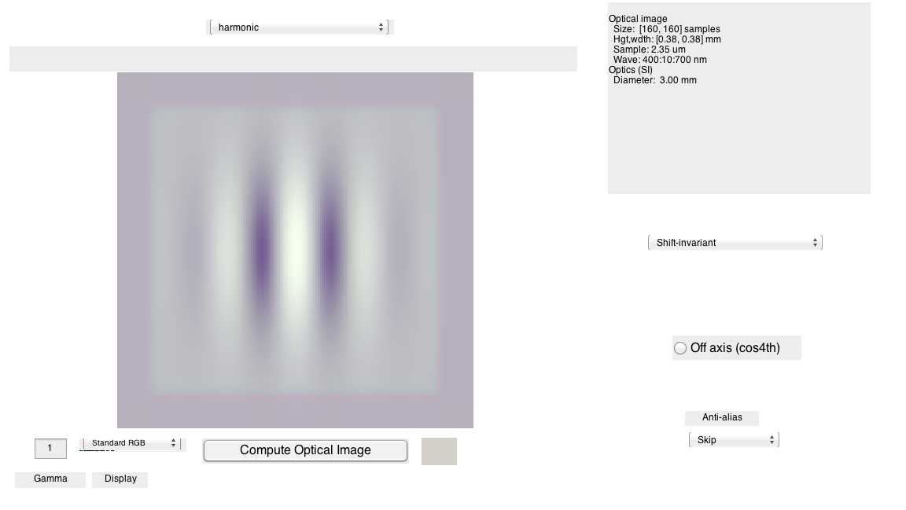
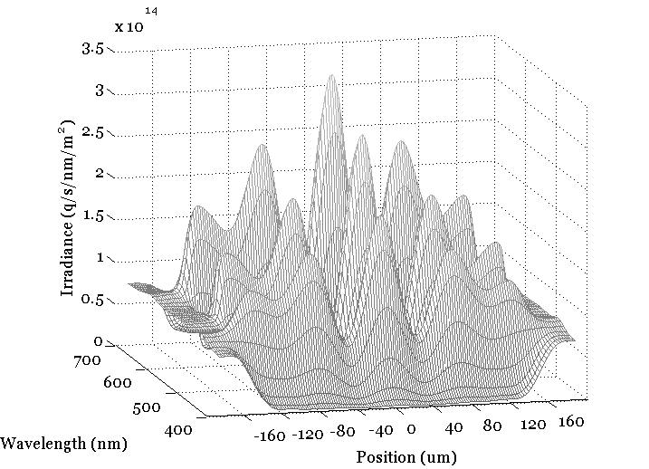
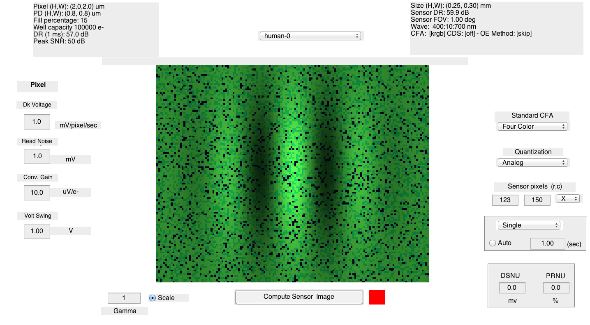
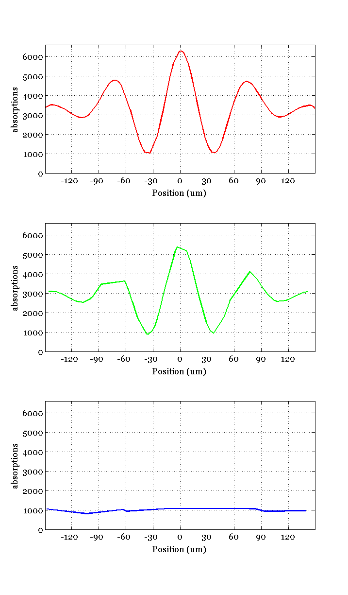

v_fred_rieke
Compare cone isomerization results between ISETBIO and Rieke's paper
Reference: Charles A Hass, et. al, Chromatic detection from cone photoreceptors to V1 neurons to behavior in rhesus monkeys
(HJ) ISETBIO TEAM, 2014
Contents
s_initISET
General scene parameters
wave = (400:10:700)';
fov = 1;
d = displayCreate('OLED-Sony', wave);
Changing wave and interpolating SPD also, for consistency
Not needed at this point
% spd = displayGet(d,'spd'); % vcNewGraphWin; % plot(wave,spd); % xlabel('Wave (nm)'); ylabel('Spectral radiance (watts/sr/s/nm/m^2)');
Make a scene without knowledge of the display characteristics
% The mean luminance of the screen is set to 100 cd/m2. p.freq = 4; p.contrast = 1; p.ph = 0; p.ang = 0; p.row = 128; p.col = 128; p.GaborFlag = .2; scene = sceneCreate('harmonic',p); scene = sceneSet(scene, 'h fov', fov); % Make the SPD like one of our displays scene = sceneAdjustIlluminant(scene,sum(displayGet(d,'spd primaries'),2));
Show the simulated image
vcAddObject(scene); sceneWindow; mid = round(sceneGet(scene,'row')/2); plotScene(scene,'radiance hline',[1, mid]); 
Create human optics
% According to the paper, pupil size should be of area 12.6 mm^2 (4 mm % pupil diameter) pupil_size = 4; % 4 mm diameter oi = oiCreate('wvf human', pupil_size); oi = oiCompute(scene, oi); vcAddObject(oi); oiWindow;
Show the irradiance
mid = round(oiGet(oi,'row')/2); plotOI(oi,'irradiance hline',[1, mid]); az = -13.5; el = 14; view([az el]);
Create sensor
According to the paper, cone collecting area is 0.6 um^2 macular pigment transmittancewas scaled to 0.35 at 460 nm lens transmittancewas scaled to 1 at 400 nm
sensor = sensorCreate('human'); sensor = sensorSet(sensor, 'wave', wave); pixel = pixelCreate('human', wave); pixel = pixelSet(pixel, 'pd width', 0.774e-6); % photo-detector width pixel = pixelSet(pixel, 'pd height', 0.774e-6); sensor = sensorSet(sensor, 'pixel', pixel); % lens transmittance was scaled to 1 at 400 nm % THIS PART IS NOT RIGHT AT THIS POINT...NOW IT'S TO EQUIVALENT TO IGNORE % THE LENS EFFECT... lens = sensorGet(sensor, 'human lens'); lens_trans = lensGet(lens, 'transmittance'); unit_density = lensGet(lens, 'unit density'); scale_factor = log10(lens_trans(wave==400))/unit_density(wave==400); lens_density = lensGet(lens, 'density'); lens = lensSet(lens, 'density', lens_density + scale_factor); sensor = sensorSet(sensor, 'human lens', lens); % macular pigment absorbance was scaled to 0.35 at 460 nm macular = sensorGet(sensor, 'human macular'); macular = macularSet(macular, 'density', 0.35); macular = macularSet(macular, 'density', 0); sensor = sensorSet(sensor, 'human macular', macular);
Compute cone absorptions
sensor = sensorSetSizeToFOV(sensor, fov, scene, oi); sensor = sensorSet(sensor, 'exp time', 1); sensor = sensorComputeNoiseFree(sensor, oi); photons = sensorGet(sensor, 'photons'); coneType = sensorGet(sensor, 'cone type'); coneNames = {'L', 'M', 'S'}; for ii = 2 : 4 fprintf('photoisomerization %s: %d R/sec\n', coneNames{ii-1}, ... median(photons(coneType==ii))); end
photoisomerization L: 3355 R/sec photoisomerization M: 2969 R/sec photoisomerization S: 888 R/sec
Cone as sensor
vcAddObject(sensor); sensorWindow('scale',1); % Could put up the spectral QE to emphasize lack of lens cutoff.
Put up horizontal plot through mosaic of the three types
mid = sensorGet(sensor,'row')/2; plotSensor(sensor,'electrons hline',round([1 mid])); % (x,y)